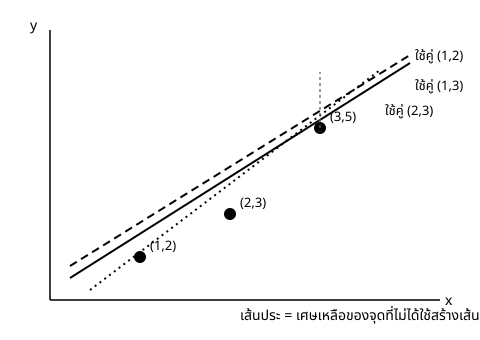

Maths Fundamentals for DS & CS — สัปดาห์ 02
Overdetermined = สมการมากกว่าตัวแปร · Underdetermined = สมการน้อยกว่าตัวแปร (มักมีตัวแปรอิสระ)
งานจริงมีข้อมูล $n$ แถว (สมการ) และพารามิเตอร์ $p$ ตัว (ตัวแปร) โดย $n$ มักเป็นหลักหมื่นหลักแสน ส่วน $p$ อาจเป็นแค่สิบ
$$ a x_i + b = y_i \qquad \text{แต่ละจุดข้อมูล} \; (x_i, y_i) \; \text{ให้หนึ่งสมการ} $$
เส้นตรงเส้นเดียวผ่านทุกจุดได้ก็ต่อเมื่อทุกจุดอยู่บนเส้นเดียวกันจริง — ข้อมูลจริงไม่เคยเป็นแบบนั้น
เศษเหลือ (residual): เมื่อไม่มีผลเฉลยพอดี วัดว่าคำตอบที่เดามาห่างจากความจริงเท่าใด
$$ r_i = y_i - (a x_i + b) $$
ถ้าทุกตัวเป็นศูนย์ → มีผลเฉลยพอดี · ถ้าไม่เป็นศูนย์ → ต้องตัดสินใจว่า "ดีที่สุด" หมายถึงอะไร
โจทย์: จุด $(1,3), (2,5), (4,9)$ มีเส้นตรง $y=ax+b$ ผ่านทั้งสามจุดหรือไม่
$$ a+b=3,\quad 2a+b=5,\quad 4a+b=9 $$
แก้จากสองสมการแรกได้ $a=2,\,b=1$ ทดกับสมการที่สาม (ยังไม่ได้ใช้เลย): $4(2)+1=9$ ✓
ตรวจคำตอบ: เศษเหลือทั้งสามตัว $r_1=r_2=r_3=0$
ตอบ: $\{(a,b)=(2,1)\}$
โจทย์: จุด $(1,2), (2,3), (3,5)$ — มีเส้นตรงผ่านทั้งสามจุดหรือไม่
| ใช้คู่ | $(a,b)$ | ทดกับสมการที่เหลือ |
|---|---|---|
| S1, S2 | $(1, 1)$ | $3(1)+1=4 \ne 5$ ✗ |
| S1, S3 | $(\tfrac32, \tfrac12)$ | $2(\tfrac32)+\tfrac12=\tfrac72 \ne 3$ ✗ |
| S2, S3 | $(2, -1)$ | $2+(-1)=1 \ne 2$ ✗ |
ยืนยันด้วยการกำจัดตัวแปร: ได้แถวขัดแย้ง $0=1$ → ตอบ: $\varnothing$
$$ \begin{aligned} (a,b)=(1,1):&\quad \textstyle\sum r_i^2 = 0^2+0^2+1^2 = 1 \\ (a,b)=\left(\tfrac32,\tfrac12\right):&\quad \textstyle\sum r_i^2 = 0^2+\left(\tfrac12\right)^2+0^2 = \tfrac14 \\ (a,b)=(2,-1):&\quad \textstyle\sum r_i^2 = 1^2+0^2+0^2 = 1 \end{aligned} $$
เราลองแค่สามคู่จากอนันต์ — การหาคู่ที่ทำ $\sum r_i^2$ เล็กที่สุดจริงต้องใช้อนุพันธ์ย่อย

$n$ แถวข้อมูล = $n$ สมการ · $p$ พารามิเตอร์ = $p$ ตัวแปร · เพราะ $n \gg p$ ระบบจึงไม่มีผลเฉลยพอดีเสมอ
หัวข้อนี้อธิบายว่าทำไมวิชานี้ต้องมีคำว่า "ความสูญเสีย" (loss) อยู่ตรงกลาง — ถ้าระบบมีผลเฉลยพอดีเสมอ แก้สมการก็จบ ไม่ต้องมี loss เลย แต่เพราะไม่มีผลเฉลยพอดี คำถามจึงต้องเปลี่ยนจาก "อะไรคือคำตอบ" เป็น "อะไรคือคำตอบที่ผิดน้อยที่สุด"
underdetermined ก็มีที่ใช้จริง — ฟีเจอร์มากกว่าข้อมูล (เช่นยีนหลายหมื่นตัวอย่างไม่กี่ร้อย) ตัวแปรอิสระเป็นหมื่น ๆ ตัว คำถามกลายเป็น "จะเลือกคำตอบไหนจากอนันต์" — ที่มาของ regularization (คอร์ส 15 สัปดาห์)
ข้อมูลจริงมีสัญญาณรบกวนตามธรรมชาติเสมอ โมเดลง่าย ๆ แทบไม่มีทางฟิตได้พอดีเป๊ะทุกจุดโดยบังเอิญ
สิ่งที่ควรสงสัยก่อน:
ข้อควรระวัง: นี่คือคนละเรื่องกับ overfitting แบบคลาสสิก (ที่วัดจากช่องว่างระหว่างความแม่นยำบน train กับ test) — โมเดลที่มีพารามิเตอร์น้อยกว่าข้อมูลมากไม่ใช่โมเดลที่ "ซับซ้อนเกินไป" จนจำข้อมูลได้ ดังนั้นถ้าเจอฟิตพอดีเป๊ะแบบนี้ ให้ตรวจ pipeline ข้อมูลก่อน ไม่ใช่ปรับความซับซ้อนของโมเดล
จบช่วงนี้ควรทำได้:
ตั้งค้างไว้: "ถ้าไม่มีผลเฉลยพอดี จะเลือกคำตอบที่ดีที่สุดอย่างไร" — ต้องมีอนุพันธ์ย่อยก่อน (สัปดาห์ 4) แล้วจึงตอบเต็มรูปใน สัปดาห์ 5 (Capstone) อย่าไปหาสูตร least squares มาท่องล่วงหน้า คอร์สนี้ออกแบบให้คุณสร้างมันขึ้นเอง
การบ้าน: exercises/ex_02.md ข้อ 8–11 · ตัวอย่างที่มีผลเฉลยมากมายทั้งที่ overdetermined (2.4) มีแต่ใน note